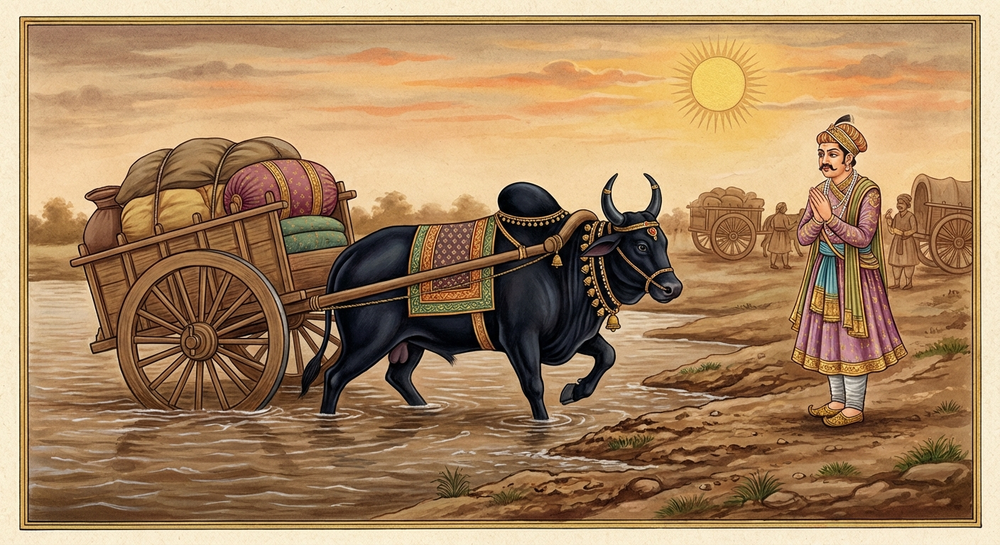

9. කණ්හ ජාතකය (29)
“යතො යතො ගරුධුරන්ති” යන මේ ජාතකය බුදුරජාණන් වහන්සේ ජේතවනාරාමයේ වැඩ වසන සමයෙහි යමා මහ පෙළහර අරබයා දේශනා කරන ලද්දකි. බුදුරජාණන් වහන්සේ දෙව්ලොව වැඩීම පිළිබඳ කතා පුවත දහතුන්වන නිපාතයේ සරභමිග ජාතකයෙහි (ජා. 1.13.134 ආදියෙහි) විස්තර වනු ඇත. සම්මා සම්බුදුරජාණන් වහන්සේ යමා මහ පෙළහර පා, දෙව්ලොව තුන් මසක් වස් වැස, මහා පවාරණය සඳහා සංකස්ස නගර ද්වාරයට බැස මහත් පිරිවර සමග ජේතවනයට පිවිසි කල්හි, භික්ෂූන් වහන්සේලා දම් සභාවට රැස්ව, “ඇවැත්නි, තථාගතයන් වහන්සේ වනාහි අසමධුර (සමාන කළ නොහැකි භාර උසුලන) වන සේක. උන්වහන්සේ ඉසුලූ ධුරය උසුලන්නට සමත් අන් කිසිවෙක් නැත. ෂට් ශාස්තෘවරු ‘අපිම පෙළහර පාන්නෙමු, අපිම පෙළහර පාන්නෙමු’ යි කියා එකම පෙළහරක් හෝ නොකළහ. ඒකාන්තයෙන්ම ශාස්තෲන් වහන්සේ අසමධුර වන සේක,” යැයි බුදුගුණ කියමින් සිටියහ. ශාස්තෲන් වහන්සේ පැමිණ, “මහණෙනි, දැන් කවර කතාවකින් යුතුව හුන්නාහු ද?” යි විමසූහ. “ස්වාමීනි, අන් කතාවකින් නොව, ඔබවහන්සේගේ ගුණ කතාවෙනි,” යි පැවසූහ. එවිට ශාස්තෲන් වහන්සේ, “මහණෙනි, දැන් මා ඉසුලූ ධුරය කවරෙක් උසුලන්න ද? පෙර තිරිසන් යෝනියෙහි උපන් කල්හි පවා මම මට සමාන ධුර ඇති අන් කිසිවෙකු නොලද්දෙමි,” යි වදාරා අතීත කතාව ගෙනහැර දැක්වූ සේක.
අතීතයෙහි බරණැස් නුවර බ්රහ්මදත්ත රජු රාජ්ය කරන සමයෙහි බෝධිසත්වයෝ ගව යෝනියෙහි පිළිසිඳ ගත්හ. ඔහු තරුණ වසු පැටියෙකු අවධියේම ඔහුගේ අයිතිකරුවෝ එක් මැහැලියකගේ නිවසේ නැවතී සිටි කුලිය හිලව් වීම පිණිස ඔහු ඇයට දුන්හ. මැහැලිය ඔහු තමාගේම දරුවෙකු මෙන් සලකා කැඳ බත් ආදිය දී පෝෂණය කළාය. ඔහුට “අය්යිකාකාළක” (ආච්චිගේ කළු) යන නම ව්යවහාර විය. වියට පැමිණි ඔහු අඳුන් පැහැති (කළු) ශරීර ඇත්තෙක් වී ගමෙහි අනෙක් ගවයන් සමඟ හැසිරෙයි; යහපත් හැසිරීමෙන් යුක්ත විය. ගමේ දරුවෝ ඔහුගේ අංවලින් ද, කන්වලින් ද, බෙල්ලෙන් ද අල්ලා එල්ලෙති; වලිගයෙන් අල්ලාගෙන සෙල්ලම් කරති; පිට මත ද වාඩි වෙති. එක් දිනක් ඔහු මෙසේ සිතුවේය: “මාගේ මව දිළිඳු ය. මා දරුවෙකු මෙන් සලකා ඉතා දුකසේ පෝෂණය කළාය. මම යම් කුලී වැඩක් කර ඇයව මේ දිළිඳු බවින් මුදවා ගන්නේ නම් මැනවි.” එතැන් පටන් ඔහු කුලී වැඩක් සොයමින් හැසිරෙයි.
ඉක්බිති එක් දිනක් එක්තරා ගැල් නායක පුත්රයෙක් ගැල් පන්සියයක් සමඟින් සමතලා නොවන (විෂම) තොටුපළකට පැමිණියේය. එහිදී ඔහුගේ ගවයෝ ගැල් එගොඩ කිරීමට නොහැකි වූහ. ගැල් පන්සියයෙහි ගවයන් පෙළට යෙදුව ද එකම ගැලක් හෝ එගොඩ කර ගැනීමට නොහැකි විය. බෝධිසත්වයෝ ද ගම් ගවයන් සමඟ එහි සමීපයෙහි හැසිරෙති. ගව ලක්ෂණ දන්නා ඒ ගැල් නායක පුත්රයා, “මේ ගැල් එගොඩ කිරීමට සමත් ආජානීය වෘෂභයෙක් මේ ගවයන් අතර සිටී ද?” යි සොයා බලන්නේ බෝධිසත්වයන් දැක, “මේ ආජානීයයාට මාගේ ගැල් එගොඩ කිරීමට හැකි වනු ඇත; මොහුගේ අයිතිකරු කවරෙක් ද?” යි ගොපල්ලන්ගෙන් විමසීය. “පින්වතුනි, මොහුගේ අයිතිකරු කවුද? මම මොහු ලවා ගැල් එගොඩ කරවා කුලිය දෙන්නෙමි,” යි කීවේය. ඔවුහු, “මොහු අල්ලාගෙන වැඩට යොදවන්න; මොහුට මේ ස්ථානයෙහි අයිතිකරුවෙක් නැතැ” යි කීහ. ඔහු බෝසතුන්ගේ නාසයට ලණුවක් දමා ඇද්ද නමුත් සොලවන්නට පවා නොහැකි විය. බෝධිසත්වයෝ, “කුලිය කතා කරගෙන මිස නොයමි” යි නොගියහ. ගැල් නායක පුත්රයා ඔහුගේ අදහස දැන, “ස්වාමීනි, ඔබ විසින් ගැල් පන්සියය එගොඩ කළ කල්හි එක ගැලකට කහවණු දෙක බැගින් කුලිය වශයෙන් දහසක් දෙන්නෙමි” යි කීවේය. එවිට බෝධිසත්වයෝ තමන්ම ගියහ. ඉන්පසු මිනිස්සු ඔහු පළමු ගැල් පෙළෙහි යෙදූහ. හෙතෙම එක වේගයෙන්ම ගැල ඔසවා ගොඩබිම පිහිටුවිය. මේ උපායෙන් සියලුම ගැල් එගොඩ කළේය.

අනතුරුව ගැල් නායක පුත්රයා එක් ගැලකට එක කහවණුව බැගින් ගණන් බලා කහවණු පන්සියයක් පොදියක් බැඳ ඔහුගේ ගෙලෙහි බැන්දේය. එවිට බෝධිසත්වයෝ, “මොහු මට නියම කරගත් පරිදි කුලිය නොදෙයි; දැන් මොහුට යන්නට ඉඩ නොදෙමි” යි සිතා ගොස්, සියල්ලට ඉදිරියෙන් වූ ගැල ඉදිරිපිට මාර්ගය හරස් කර සිටියේය. ඉවත් කිරීමට උත්සාහ කළ ද ඔහු ඉවත් කිරීමට නොහැකි විය. ගැල් නායක පුත්රයා, “මොහු තමාගේ කුලිය අඩු බව දන්නා බව පෙනේ” යැයි සිතා, එක් ගැලකට දෙක බැගින් ගණන් බලා දහසක් පොදියක් බැඳ, “මෙය ඔබගේ ගැල් එතෙර කිරීමේ කුලිය යැ” යි ගෙලෙහි එල්ලුවේය. ඔහු කහවණු දහසක පොදිය රැගෙන මව වෙත ගියේය. ගමේ ළමයි, “මේ ආච්චිගේ කළුගේ (අය්යිකාකාළකගේ) බෙල්ලේ තිබෙන්නේ මොනවාදැ?” යි බෝධිසත්වයන් සමීපයට පැමිණෙති. ඔහු ඔවුන් පසුපස එලවා දුරින්ම පලවා හැර මව වෙතටම ගියේය. ගැල් පන්සියයක් එගොඩ කළ බැවින් රතු වූ ඇස් ඇතිව, විඩාපත් වූ ස්වභාවයක් පෙනුණි. මැහැලිය ඔහුගේ ගෙලෙහි වූ දහසක මල්ල දැක, “පුත, මේවා ඔබට කොහෙන් ලැබුණේ දැ?” යි ගොපලු දරුවන්ගෙන් අසා, සිද්ධිය දැන, “පුත, ඔබ ලත් කුලියෙන් මම ජීවත් වීමට නොකැමැත්තෙමි; කුමක් හෙයින් මෙබඳු දුකක් වින්දෙහි ද?” යි පවසා, බෝධිසත්වයන් උණු දියෙන් නාවා, මුළු ශරීරය තෙල් ගල්වා, පැන් පොවා, හිතකර ආහාරයක් අනුභව කරවා, ජීවිත අවසානයේ බෝධිසත්වයන් සමඟම කම් වූ පරිදි මිය ගියාය.
ශාස්තෲන් වහන්සේ, “මහණෙනි, තථාගත තෙමේ දැන් පමණක් අසමධුර වූයේ නොවේ, පෙර ද අසමධුරම වූයේ යැ” යි වදාරා, මේ ධර්ම දේශනාව ගෙනහැර දක්වා අනුසන්ධි ගළපා, අභිසම්බුද්ධ වී මේ ගාථාව වදාළ සේක:
“යම් තැනක මහත් බර ඉසිලීමක් වේ ද, යම් තැනක විසම මඟක් වෙයි ද, එහි දී කණ්හ (කාළක) යොදවයි; හෙතෙම ඒ බර උසුලයි.”
එහි අර්ථය මෙසේය: යතො යතො ගරු ධුරං යනු යම් යම් තැනක ධුරය හෙවත් බර මහත් වෙයි ද, භාරදූර වෙයි ද, අනෙක් ගොනුන් එය එසවීමට නොහැකි වෙත් ද; යතො ගම්භීරවත්තනී යනු ‘වත්තනී’ යනු මාර්ගයට නමකි, යම් තැනක දිය හා මඩ අධික බැවින් හෝ කැඩී බිඳී ගිය ඉවුරු ඇති බැවින් හෝ මාර්ගය ගැඹුරු (දුෂ්කර) වේ ද යන අර්ථයයි. තදාස්සු කණ්හං යුඤ්ජන්ති යන්නෙහි අස්සු යනු නිපාත පදයකි; එකල්හි කණ්හයා (කාළක) යොදවයි යන අර්ථයයි. යම් විටක බර ද මහත් වෙයි ද, මාර්ගය ද ගැඹුරු (විසම) වෙයි ද, එකල්හි අන් ගොනුන් ඉවත් කර කණ්හයාම යොදවති යි කියන ලද්දේ වෙයි. ස්වාස්සු තං වහතෙ ධුරං යන්නෙහි ද අස්සු යනු නිපාතයක් පමණි; ඔහු ඒ ධුරය උසුලයි යන අර්ථයයි.
මෙසේ භාග්යවතුන් වහන්සේ, “මහණෙනි, එකල්හි කණ්හයාම ඒ බර ඉසිලීයැ” යි දක්වා අනුසන්ධි ගළපා ජාතකය සමාප්ත කළ සේක: “එකල මැහැලිය දැන් උප්පලවණ්ණා ය; අය්යිකාකාළකයා (ආච්චිගේ කළු) නම් මම ම වෙමි.”
නවවන කණ්හ ජාතක වර්ණනාවයි.